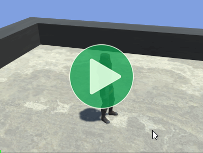 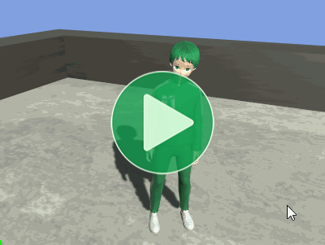Location: Samples/06 State Machines/04 Weapons
Recommended After: Brains
Learning Outcomes: in this sample you will learn:
How to allow a character to equip different weapons.
How have each weapon define its own animation details for the character to use.
How to use Input Buffers.
Summary
This sample expands upon the Brains sample to allow a character hold various weapons which each have their own set of animations. It only uses this system for Attack, Equip, and UnEquip animations, but the concept could be extended to other animations such as having a different Idle or Walk animation to hold the weapon correctly.
- Animancer doesn't know or care where your animations are defined, so there's no need for all of them to be defined on the character.
- In this case, a weapon prefab holds the animations that a character will use when they equip it.
- Input Buffering can help make a game feel more responsive to the player by accepting button presses that were slightly too early for the corresponding actions to be performed.
Controls
- WASD = Walk
- WASD + Left Shift = Run
- Left Click = Attack
- Right Click = Change Weapon
Licensing
The top video was made using the scripts from this sample on a character called Paladin J Nordstrom from Mixamo along with various animations. Unfortunately, those assets can't be legally redistributed in their raw source form, meaning that they can't be included in Animancer. So instead, the actual sample scene reuses the props and animations from earlier samples. This also avoids needing a large number of animations which would only be used in this one sample.
Overview
The general code structure is similar to the Brains sample, with a few changes:
MovingCharacterBrainhas been replaced byWeaponsCharacterBrain.ActionStatehas been replaced byEquipStateandAttackStatewhich don't reference their animations directly. Instead, they get their animations from the currently equippedWeapon.
{kind=link}
Weapon
The main purpose of this sample is to demonstrate how animations can be defined separately from a character. That's what the Weapon class is for, it holds the animations relating to a particular weapon so that when a character equips it they can play appropriate animations for it:
using Animancer;
using UnityEngine;
public class Weapon : MonoBehaviour
{
It has an array of animations for the Attack State to use in sequence if the character attacks repeatedly:
[SerializeField]
private TransitionAsset[] _AttackAnimations;
public TransitionAsset[] AttackAnimations => _AttackAnimations;
And animations for the Equip State to use when changing to this weapon and before changing to another weapon:
[SerializeField]
private TransitionAsset _EquipAnimation;
public TransitionAsset EquipAnimation => _EquipAnimation;
[SerializeField]
private TransitionAsset _UnequipAnimation;
public TransitionAsset UnequipAnimation => _UnequipAnimation;
}
In a real game, this class might have other details like damage, damage type, weapon category, etc. It could also Inherit from a base Item class for things like weight, cost, and description.
Weapon Prefabs
Implementing Weapon as a component means that each one can be set up along with its model as a prefab. This offers great flexibility in how they can be used, such as to have a character pick up or drop a weapon or to dynamically load individual weapons when they are needed instead of directly referencing all available weapons at once (which would mean they are all loaded at all times).
But all that is beyond the scope of this sample. Here we're just showing how animations can be defined outside of the logical state that uses them so the weapons are just objects in the scene and the Weapons Character Brain references them all in an array.

Animancer Weapons
The weapons in the sample scene are a bit limited because they're only reusing assets from other samples. They all use Humanoid-Flinch as their Equip Animation and have no Unequip Animation.
Unarmed doesn't have any attacks:
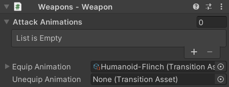
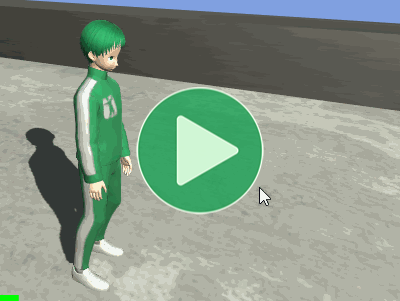
Pistol has one attack using Humanoid-PistolShoot:
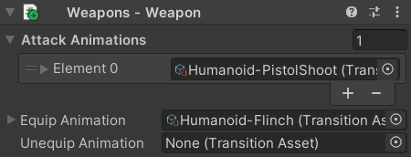
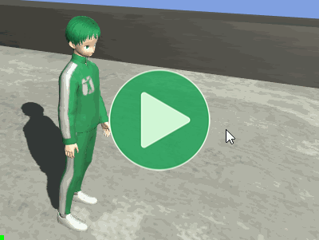
Golf Club has an attack using Humanoid-GolfSwing then Humanoid-PistolShoot (it looks silly, but it at least shows how one attack animation chains into the next if you attack repeatedly):
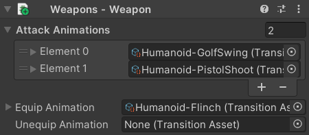
Mixamo Weapons
The Mixamo weapons used for the first video are a bit more detailed.
Unarmed has two attacks but no equip or unequip animation:
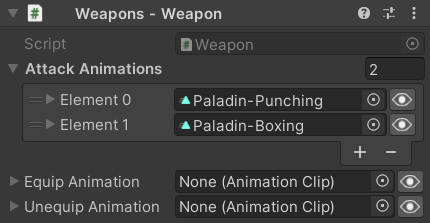
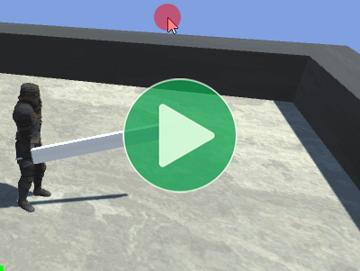
Club has three attacks and one animation for both equip and unequip:
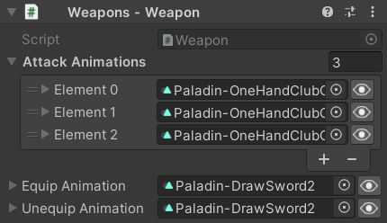
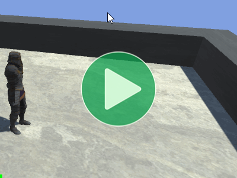
Great Sword has three attacks and separate animations for equip and unequip:
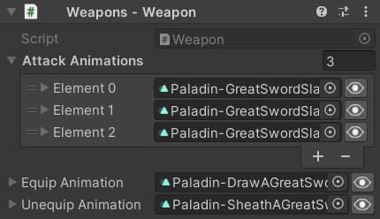
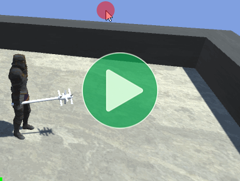
Equipment
The Character class has a reference to an Equipment component:
class Character
{
...
[SerializeField]
private Equipment _Equipment;
public Equipment Equipment => _Equipment;
}
The Equipment script has a reference to the Transform of the RightHand bone so it can re-parent weapons to that bone when they are equipped:
public class Equipment : MonoBehaviour
{
[SerializeField] private Transform _WeaponHolder;
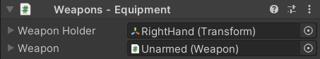
It also has a reference to the currently equipped Weapon with a public wrapper property:
[SerializeField] private Weapon _Weapon;
public Weapon Weapon
{
get => _Weapon;
When the Weapon is changed, it detaches the old weapon from the _WeaponHolder and attaches the new one to it:
set
{
DetachWeapon();
_Weapon = value;
AttachWeapon();
}
}
And it also needs to attach the current weapon on startup:
protected virtual void Awake()
{
AttachWeapon();
}
Attaching a weapon involves setting the _WeaponHolder as its parent, clearing its local Transform values, and activating its GameObject:
private void AttachWeapon()
{
if (_Weapon == null)
return;
Transform transform = _Weapon.transform;
transform.parent = _WeaponHolder;
transform.SetLocalPositionAndRotation(Vector3.zero, Quaternion.identity);
transform.localScale = Vector3.one;
_Weapon.gameObject.SetActive(true);
}
And detaching a weapon is even simpler, it just sets this Equipment script's Transform as its parent and deactivates its GameObject:
private void DetachWeapon()
{
if (_Weapon == null)
return;
_Weapon.transform.parent = transform;
_Weapon.gameObject.SetActive(false);
}
}
In a real game, attaching and detaching a weapon might involve instantiating and destroying a prefab or leaving it active in the scene.
Equip State
The EquipState script is a bit more complex than the states in earlier samples because it handles both the unequipping and equipping animations:
using Animancer;
using System;
using UnityEngine;
public class EquipState : CharacterState
{
public Weapon NextWeapon { get; set; }
public Weapon CurrentWeapon
=> Character.Equipment.Weapon;
public override CharacterStatePriority Priority
=> CharacterStatePriority.Medium;
protected virtual void Awake()
{
NextWeapon = CurrentWeapon;
}
public override bool CanEnterState
=> !enabled
&& NextWeapon != CurrentWeapon;
protected virtual void OnEnable()
{
if (CurrentWeapon.UnequipAnimation.IsValid())
{
AnimancerState state = Character.Animancer.Play(CurrentWeapon.UnequipAnimation);
state.Events(this).OnEnd ??= OnUnequipEnd;
}
else
{
OnUnequipEnd();
}
}
private void OnUnequipEnd()
{
Character.Equipment.Weapon = NextWeapon;
if (CurrentWeapon.EquipAnimation.IsValid())
{
AnimancerState state = Character.Animancer.Play(CurrentWeapon.EquipAnimation);
state.Events(this).OnEnd = Character.StateMachine.ForceSetDefaultState;
}
else
{
Character.StateMachine.ForceSetDefaultState();
}
}
}
It has two Weapon properties:
- The
NextWeaponneeds to be set by whatever script tries to enter this state (in this sample, that's the Brain). - The
CurrentWeaponis just a shortcut to get the current weapon from theEquipmentscript since it will be used several times throughout this script.
public Weapon NextWeapon { get; set; }
public Weapon CurrentWeapon
=> Character.Equipment.Weapon;
protected virtual void Awake()
{
NextWeapon = CurrentWeapon;
}
This state can only be entered if it isn't already in progress (it can't interrupt itself) and if the NextWeapon has been set to something different from the CurrentWeapon:
public override bool CanEnterState
=> !enabled
&& NextWeapon != CurrentWeapon;
When entering this state, if the CurrentWeapon (the previously equipped weapon) has a valid UnequipAnimation, play it and tell it to use the cached event, but if there is no animation just pretend it ended immediately:
protected virtual void OnEnable()
{
if (CurrentWeapon.UnequipAnimation.IsValid())
{
AnimancerState state = Character.Animancer.Play(CurrentWeapon.UnequipAnimation);
state.Events(this).OnEnd ??= OnUnequipEnd;
}
else
{
OnUnequipEnd();
}
}
When the UnequipAnimation ends (or is skipped), change the actual equipped weapon:
private void OnUnequipEnd()
{
Character.Equipment.Weapon = NextWeapon;
Then do basically the same as before with the new weapon's EquipAnimation. This time when the animation it uses ForceSetDefaultState to return the character to Idle:
if (CurrentWeapon.EquipAnimation.IsValid())
{
AnimancerState state = Character.Animancer.Play(CurrentWeapon.EquipAnimation);
state.Events(this).OnEnd = Character.StateMachine.ForceSetDefaultState;
}
else
{
Character.StateMachine.ForceSetDefaultState();
}
}
And finally, this state has Medium priority to control what can Interrupt it:
public override CharacterStatePriority Priority
=> CharacterStatePriority.Medium;
Attack State
The AttackState script plays animations from current weapon's AttackAnimations array. When entered it starts with the first attack, but if re-entered while the previous attack is still fading out it plays the next attack in the array:
using Animancer;
using UnityEngine;
public class AttackState : CharacterState
{
private int _AttackIndex = int.MaxValue;
private AnimancerState _CurrentState;
public Weapon Weapon
=> Character.Equipment.Weapon;
public override bool CanEnterState
=> Weapon != null
&& Weapon.AttackAnimations.Length > 0;
public override CharacterStatePriority Priority
=> CharacterStatePriority.Medium;
protected virtual void OnEnable()
{
if (ShouldRestartCombo)
_AttackIndex = 0;
else
_AttackIndex++;
TransitionAsset animation = Weapon.AttackAnimations[_AttackIndex];
_CurrentState = Character.Animancer.Play(animation);
_CurrentState.Events(this).OnEnd ??= Character.StateMachine.ForceSetDefaultState;
}
private bool ShouldRestartCombo
=> _AttackIndex >= Weapon.AttackAnimations.Length - 1
|| _CurrentState == null
|| _CurrentState.Weight == 0;
}
This state uses a simple int to keep track of which attack it's up to in the array.
- Each time the state is entered it either restarts from
0or increments to the index. - It also remembers the
AnimancerStateit played so the next attempt to enter this state can check if that animation is still active.
private int _AttackIndex = int.MaxValue;
private AnimancerState _CurrentState;
protected virtual void OnEnable()
{
if (ShouldRestartCombo)
_AttackIndex = 0;
else
_AttackIndex++;
TransitionAsset animation = Weapon.AttackAnimations[_AttackIndex];
_CurrentState = Character.Animancer.Play(animation);
_CurrentState.Events(this).OnEnd ??= Character.StateMachine.ForceSetDefaultState;
}
There are two things that will cause it to restart:
- If the index is already at the last animation.
- Or if the previous animation has already faded out fully (or hasn't been initialized yet).
private bool ShouldRestartCombo
=> _AttackIndex >= Weapon.AttackAnimations.Length - 1
|| _CurrentState == null
|| _CurrentState.Weight == 0;
And just like with the EquipState, this state has Medium priority to control what can Interrupt it:
public override CharacterStatePriority Priority
=> CharacterStatePriority.Medium;
Weapons Character Brain
The WeaponsCharacterBrain script has the same movement code as MovingCharacterBrain, but has a few other additions:
- It uses an
InputBuffer so that if a button is pressed before the corresponding state change is allowed, it will continue attempting the same state change for a short time.
- It references the
EquipState to change the equipped weapon.
- It has an array of
Weapons to cycle through. This would normally be managed by an inventory system.
InputBuffer so that if a button is pressed before the corresponding state change is allowed, it will continue attempting the same state change for a short time.EquipState to change the equipped weapon.Weapons to cycle through. This would normally be managed by an inventory system.
using Animancer.FSM;
using Animancer.Samples;
using Animancer.Units;
using System;
using UnityEngine;
public class WeaponsCharacterBrain : MonoBehaviour
{
[SerializeField] private Character _Character;
[SerializeField] private CharacterState _Move;
[SerializeField] private CharacterState _Attack;
[SerializeField, Seconds] private float _InputTimeOut = 0.5f;
[SerializeField] private EquipState _Equip;
[SerializeField] private Weapon[] _Weapons;
private StateMachine<CharacterState>.InputBuffer _InputBuffer;
protected virtual void Awake()
{
_InputBuffer = new StateMachine<CharacterState>.InputBuffer(_Character.StateMachine);
}
protected virtual void Update()
{
UpdateMovement();
UpdateEquip();
UpdateAction();
_InputBuffer.Update();
}
private void UpdateMovement()
{
Vector2 input = SampleInput.WASD;
if (input != Vector2.zero)
{
Vector3 movementDirection = new Vector3(input.x, 0, input.y);
Transform camera = Camera.main.transform;
movementDirection = camera.TransformDirection(movementDirection);
_Character.Parameters.MovementDirection = movementDirection;
_Character.StateMachine.TrySetState(_Move);
}
else
{
_Character.Parameters.MovementDirection = Vector3.zero;
_Character.StateMachine.TrySetDefaultState();
}
_Character.Parameters.WantsToRun = SampleInput.LeftShiftHold;
}
private void UpdateEquip()
{
if (SampleInput.RightMouseDown)
{
int equippedWeaponIndex = Array.IndexOf(_Weapons, _Character.Equipment.Weapon);
equippedWeaponIndex++;
if (equippedWeaponIndex >= _Weapons.Length)
equippedWeaponIndex = 0;
_Equip.NextWeapon = _Weapons[equippedWeaponIndex];
_InputBuffer.Buffer(_Equip, _InputTimeOut);
}
}
private void UpdateAction()
{
if (SampleInput.LeftMouseDown)
{
_InputBuffer.Buffer(_Attack, _InputTimeOut);
}
}
}
Input Buffering
Input Buffering is a technique where a failed state change is re-attempted each frame after the initial input until it succeeds or a short timer elapses. This makes things easier for the player to control by giving them a larger window of time during which they can perform actions.
To use it in Animancer's Finite State Machine system, initialize an InputBuffer with the StateMachine it will control:
private StateMachine<CharacterState>.InputBuffer _InputBuffer;
protected virtual void Awake()
{
_InputBuffer = new StateMachine<CharacterState>.InputBuffer(_Character.StateMachine);
}
To perform an action, call Buffer with the desired state and a "Time Out" value to determine how long the buffer will last (it could be hard coded, but being exposed in the Inspector makes it easy to tweak and test different values):
[SerializeField, Seconds] private float _InputTimeOut = 0.5f;
private void UpdateAction()
{
if (SampleInput.LeftMouseDown)
{
_InputBuffer.Buffer(_Attack, _InputTimeOut);
}
}
And finally, call Update on the buffer to make another attempt to enter the state:
protected virtual void Update()
{
UpdateMovement();
UpdateEquip();
UpdateAction();
_InputBuffer.Update();
}
Update Equip
To equip the next weapon, it needs to first figure out which one is equipped:
[SerializeField] private EquipState _Equip;
[SerializeField] private Weapon[] _Weapons;
private void UpdateEquip()
{
if (SampleInput.RightMouseDown)
{
int equippedWeaponIndex = Array.IndexOf(_Weapons, _Character.Equipment.Weapon);
This script could have a field to store the index, but the equipped weapon isn't actually changing here (only if the EquipState is entered and finishes playing the UnequipAnimation) so that could cause a mismatch between the stored value and the weapon that's actually equipped.
The index is incremented and loops back to 0 if it goes past the last weapon in the array:
equippedWeaponIndex++;
if (equippedWeaponIndex >= _Weapons.Length)
equippedWeaponIndex = 0;
Then it sets the NextWeapon and buffers the EquipState to try to equip that weapon:
_Equip.NextWeapon = _Weapons[equippedWeaponIndex];
_InputBuffer.Buffer(_Equip, _InputTimeOut);
}
}
If it fails to enter the EquipState or it gets interrupted, that NextWeapon will simply not get used and anything else that tries to enter the state should set its own value first.
What Next?
| Sample | Topic |
|---|---|
| Platformer Game Kit | A separate (free) package which demonstrates a much more complete character implementation for a 2D platformer game. |
| 3D Game Kit | A more complex character framework based on Unity's 3D Game Kit Lite. |